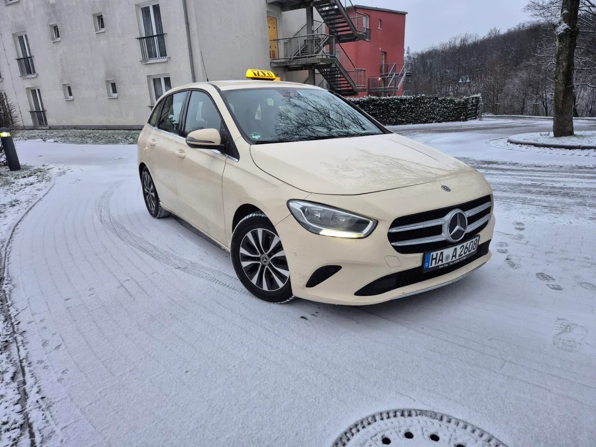

★★★★★
„Super Service, sehr gern wieder, freundlich, Pünktlich absolut Service und Zielorientirt“
JM
Jens MüllerRezension auf Google · 5/5
Ob nach Hause, zum Bahnhof oder zum nächsten Termin: Mit Taxi Taş kommen Sie entspannt an.
5,0 auf GoogleVon Fahrgästen empfohlenStart und Ziel eingeben. Anfrage vorbereiten.
Manchmal geht’s nur um die Ecke. Manchmal beginnt eine große Reise. Sagen Sie uns, wohin Sie möchten.
Zum Bahnhof, zum Einkauf oder entspannt nach Hause. Ihr Taxi für den Alltag.
Taxifahrt entdeckenFrüher Flug oder späte Landung? Fragen Sie Ihre Fahrt zum Flughafen an.
Transfer anfragenFahrtwünsche für Senioren, Angehörige und Einrichtungen persönlich abstimmen.
Sonderfahrt besprechenGeschäftstermin, Hotel oder Firmenbesuch. Gemeinsam planen wir Ihren Fahrtwunsch.
Geschäftsfahrt anfragen
Unser Taxi · OriginalaufnahmeBei Taxi Taş haben Sie einen direkten Draht zu Ihrem Taxi in Hagen. Fragen stellen, Abholung abstimmen, Fahrt planen – ganz persönlich per Telefon oder WhatsApp.
Hinter Taxi Taş steht Ali Can Tas. Mit Taxi Nr. 87 ist das Unternehmen in Hagen und Umgebung für seine Fahrgäste unterwegs.
Abholort, Ziel und Ihren Wunschtermin eintragen. Bei Bedarf eine Rückfahrt ergänzen.
Die fertige Anfrage in WhatsApp öffnen, prüfen und selbst absenden. Oder direkt anrufen.
Wir klären Verfügbarkeit und Details mit Ihnen. Erst mit unserer Zusage ist Ihre Fahrt bestätigt.
9 Google-Rezensionen*
„Super Service, sehr gern wieder, freundlich, Pünktlich absolut Service und Zielorientirt“
„Pünktlich, Zuverlässig und eines der wenigen Taxi Unternehmen mit extrem freundlichen und zuvorkommemden Fahrern. 100% Empfehlung, wünschte alle Taxi Unternehmen wären so ! Allzeit gute Fahrt und bis demnächst mal wieder!“
„Super freundlich und sehr zuverlässig. Jeder Zeit wieder 👍“
*Bewertungsstand laut bereitgestelltem Google-Profil. Drei ausgewählte Originalrezensionen; keine Live-Abfrage.
Hier finden Sie die wichtigsten Antworten rund um Ihre Fahrt.
Einfach persönlich fragenRufen Sie uns unter 01525 1617901 an oder nutzen Sie die Fahrtanfrage. Dort tragen Sie Abholort, Ziel und Ihren gewünschten Zeitpunkt ein. Die Angaben werden als Nachricht in WhatsApp geöffnet. Sie entscheiden selbst, wann Sie diese absenden.
Ihre Nachricht ist zunächst eine Anfrage. Die Fahrt steht erst fest, wenn Taxi Taş die Verfügbarkeit und die Details persönlich bestätigt hat. Wenn es schnell gehen muss, rufen Sie bitte direkt an.
Ja, Sie können einen Wunschtermin anfragen. Wählen Sie im Formular „Termin wählen“ und geben Sie Datum und Uhrzeit an. Wir stimmen die Verfügbarkeit mit Ihnen ab.
Das hängt von Ihrer Fahrt ab. Teilen Sie uns Start, Ziel und besondere Wünsche mit und fragen Sie die Kosten direkt bei uns an. Die Routenplanung zeigt Ihnen in Google Maps die Strecke; sie berechnet keinen Taxipreis.
Gerne können Sie uns Ihren Fahrtwunsch mitteilen – auch für Angehörige oder eine Einrichtung. Bitte klären Sie benötigte Unterstützung, Fahrzeuganforderungen und regelmäßige Termine vorher persönlich mit uns.
Ein Anruf oder eine Nachricht – wir freuen uns auf Ihre Anfrage.